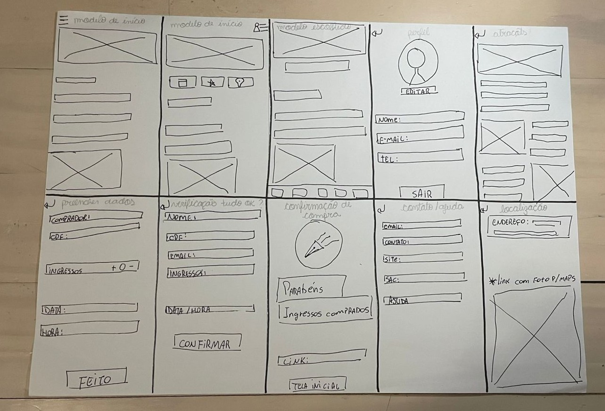
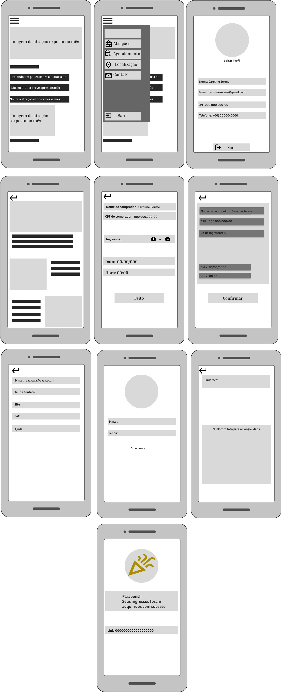
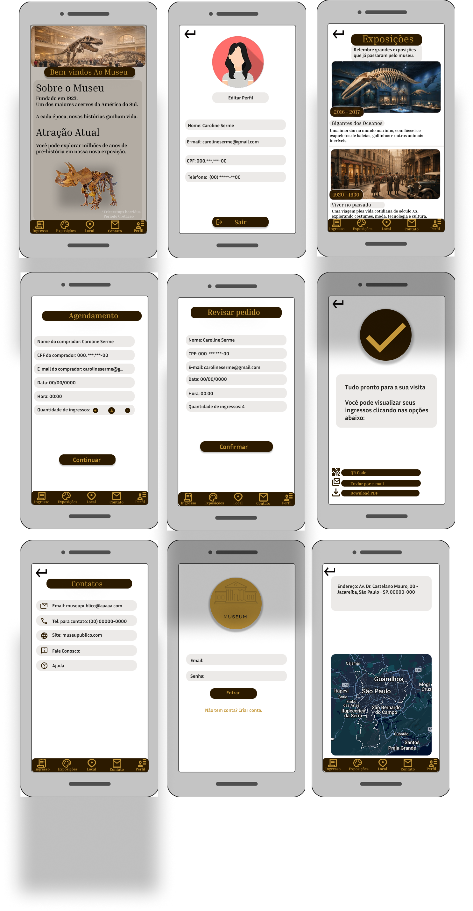
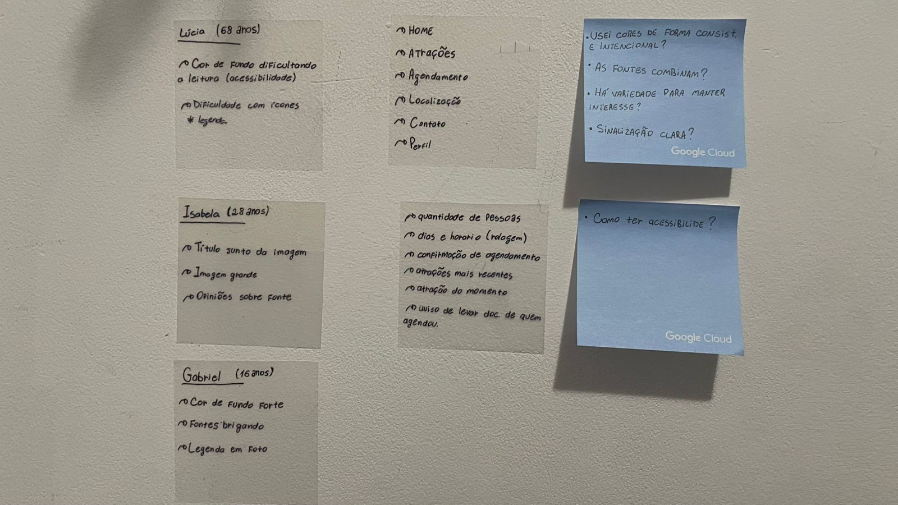
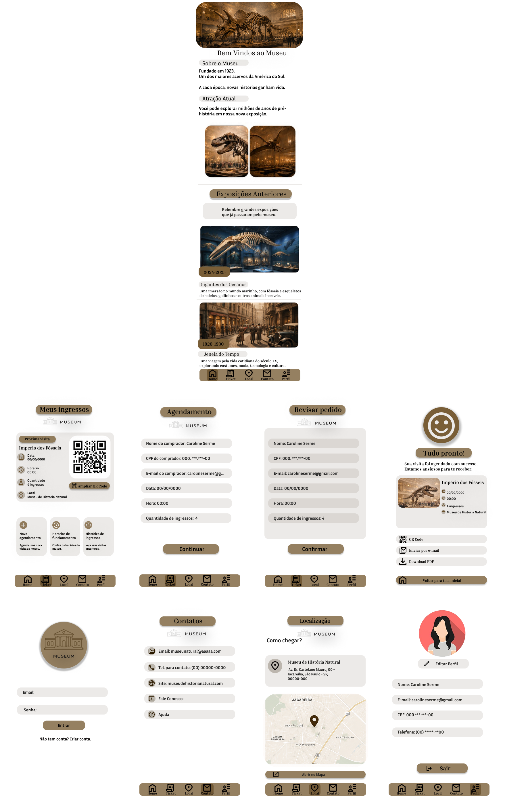

1. Processo de Ideação & Protótipos
O projeto iniciou com rascunhos manuais e evoluiu progressivamente no Figma, refinando a estrutura estrutural (Low-Fi) até o detalhamento de componentes e interações (Mid-Fi).
Rascunho Inicial no Papel

Protótipo de Baixa Fidelidade (Low-Fi)

Protótipo de Média Fidelidade (Mid-Fi)

2. Mapeamento & Personas
A partir da análise das necessidades de diferentes perfis de usuários (como Lúcia, 68 anos; Isabela, 28 anos; e Gabriel, 16 anos), identificamos dores críticas como contraste inadequado de fundo, fontes concorrentes e ícones sem sinalização clara.

3. Interface Final (UI Inclusiva)
O resultado final entrega uma paleta de alto contraste, ícones rotulados com legendas, tipografia legível e confirmações visuais claras para o agendamento de visitas.
